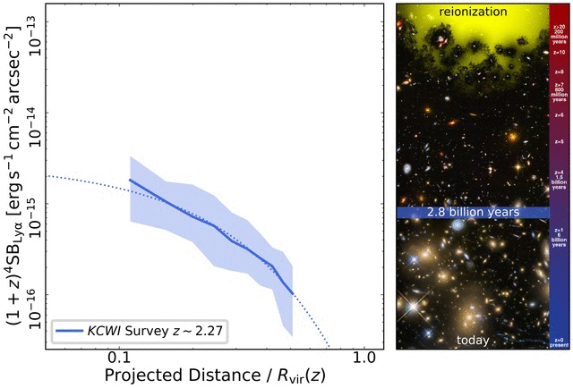

A subsample of the Lyα halos detected around z≈6 quasars, showing how diverse the distribution of cool hydrogen around massive galaxies is at cosmic dawn.

Evolution of the median Lyα surface-brightness profile around quasars at different redshifts. The surface brightness is corrected for redshift dimming, and the projected distance is normalized by the virial radius of a 1012.5M☉ dark matter halo.3D distribution of the Lyα emission around the quasar P308−21 at z≈6.23. The gas appears to move rather quiescently, suggesting that it lies within the dark matter halo that hosts the quasar.3D visualization of the Lyα (blue) and [CII] (orange) emission around the quasar P308−21. See our ESO press release for details. Credit: ESO/Farina et al.; ALMA (ESO/NAOJ/NRAO), Decarli et al.; L. Calçada.